hi
my name is ingrid
i make maps
and tell jokes
how do you see the internet?
the internet is already irl
it's a bunch of infrastructure
but infrastructure is tricky
it's designed to be ignored
we only notice it when it stops working
most people won't just tell you where infrastructure is
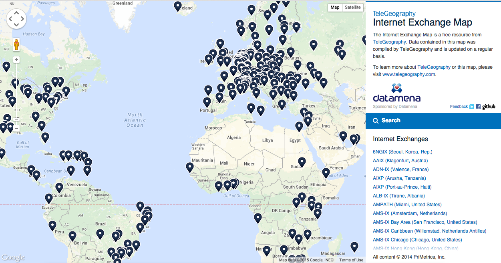
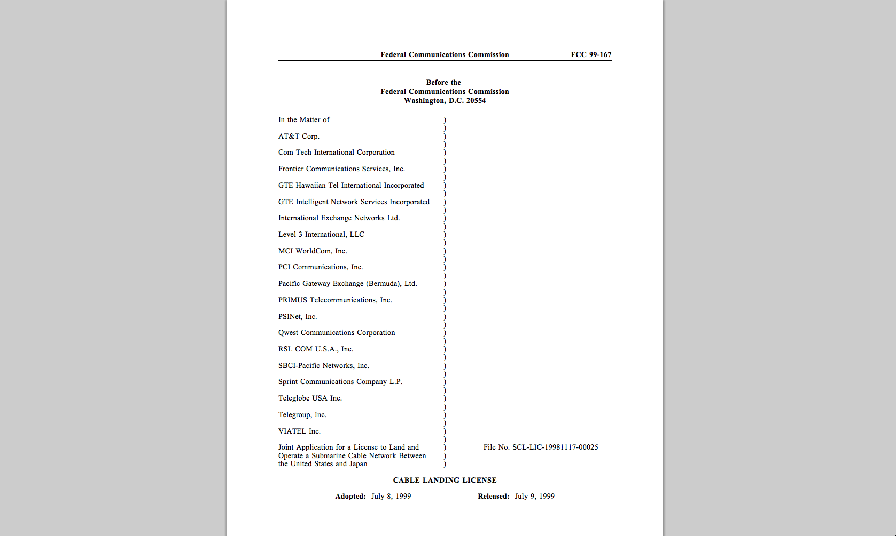
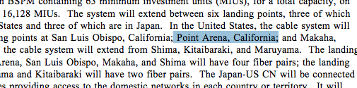
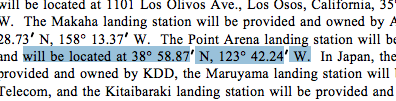
scaling down
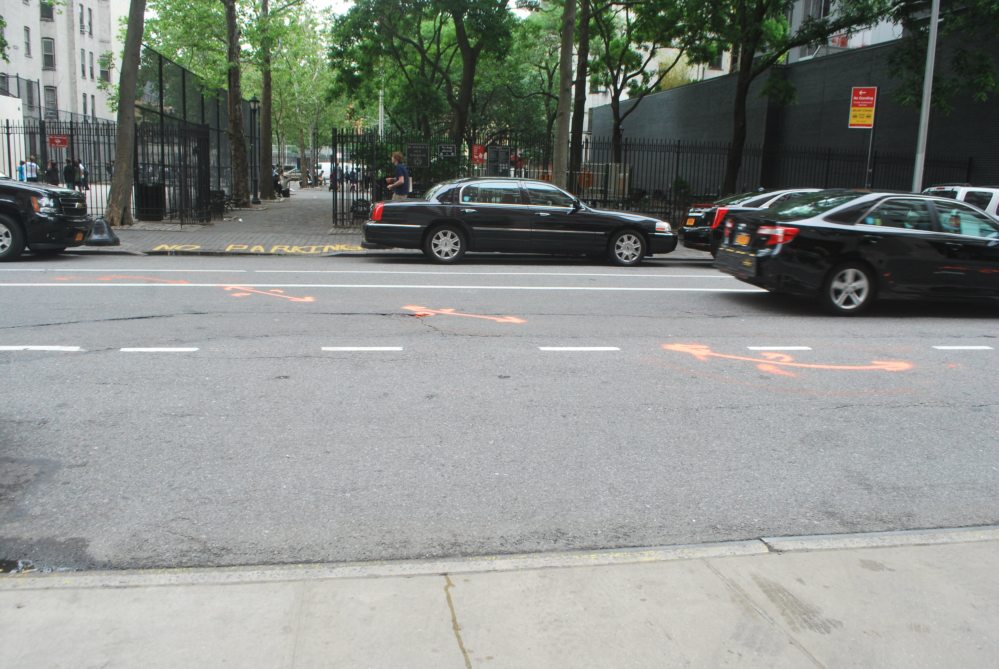
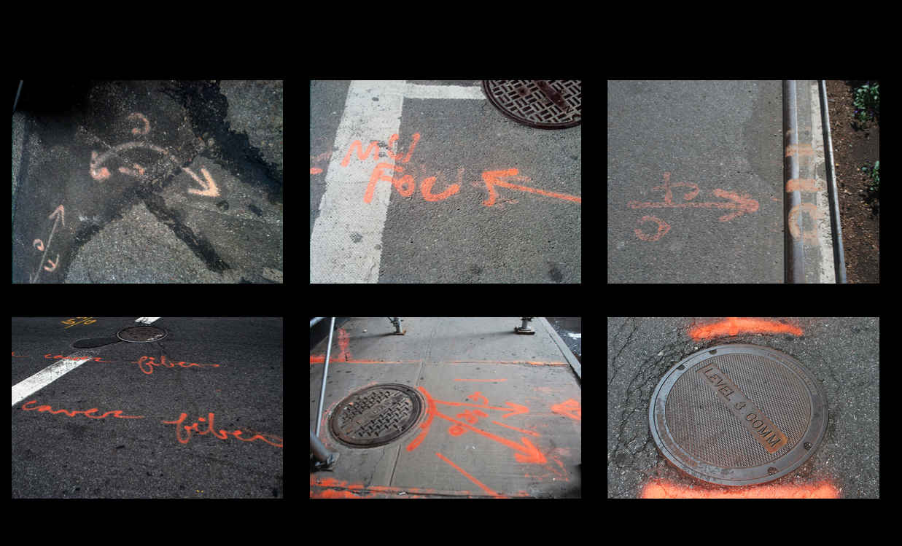
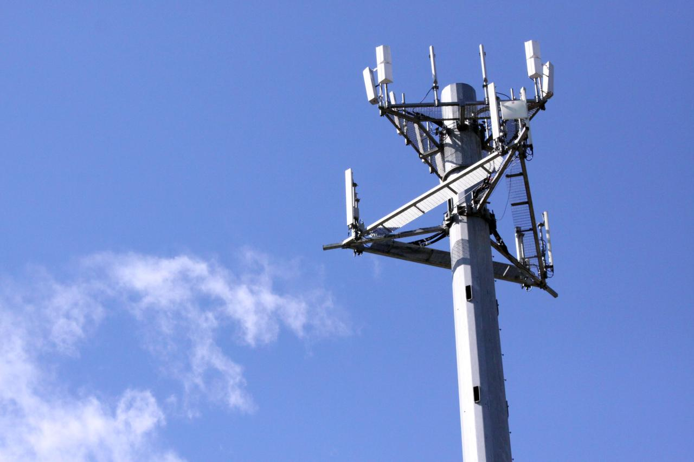
visible!=legible
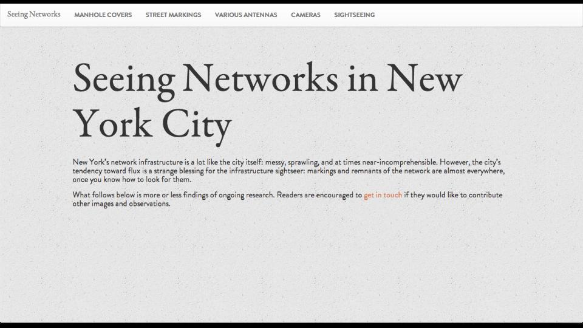
is the internet working?
who does the internet work for?
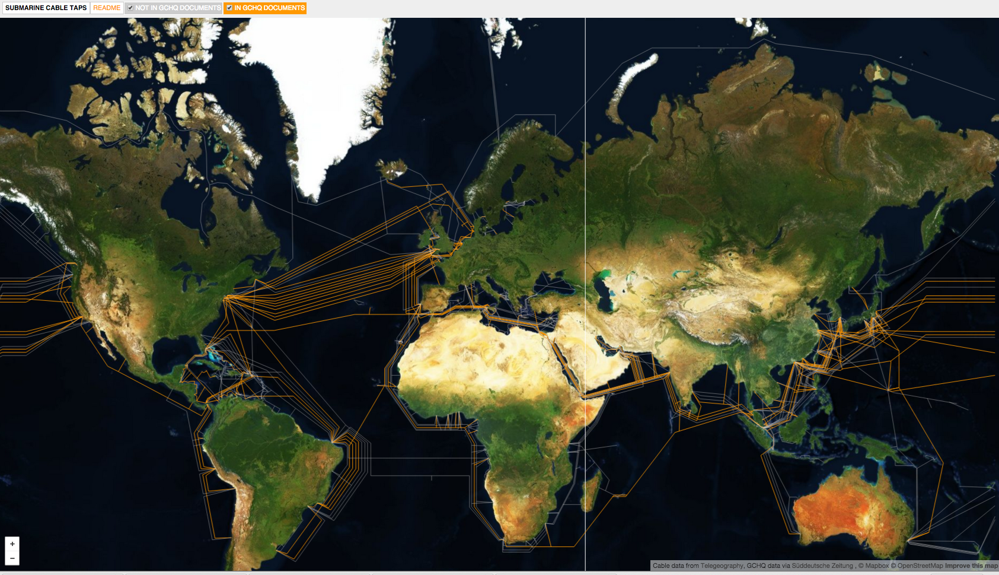
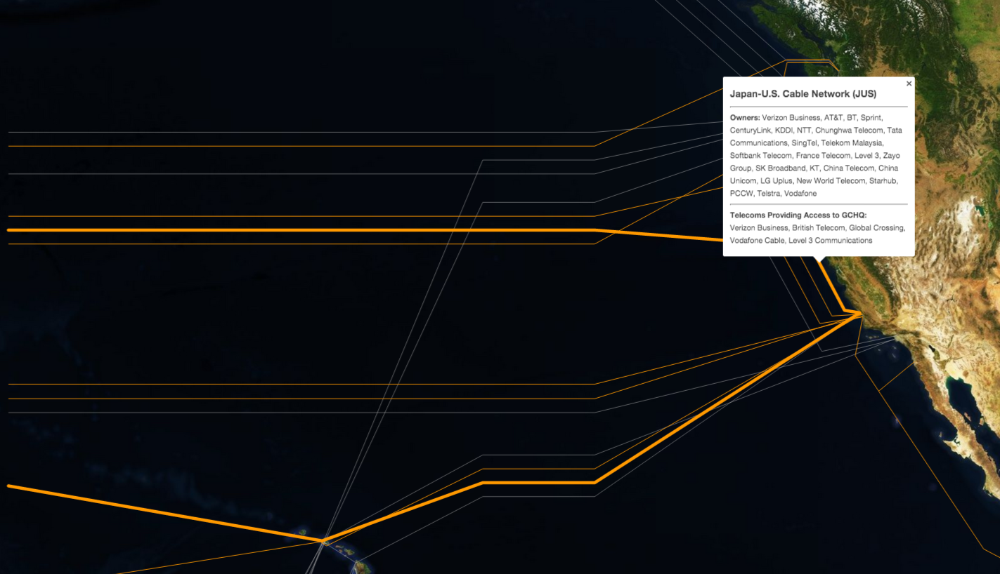
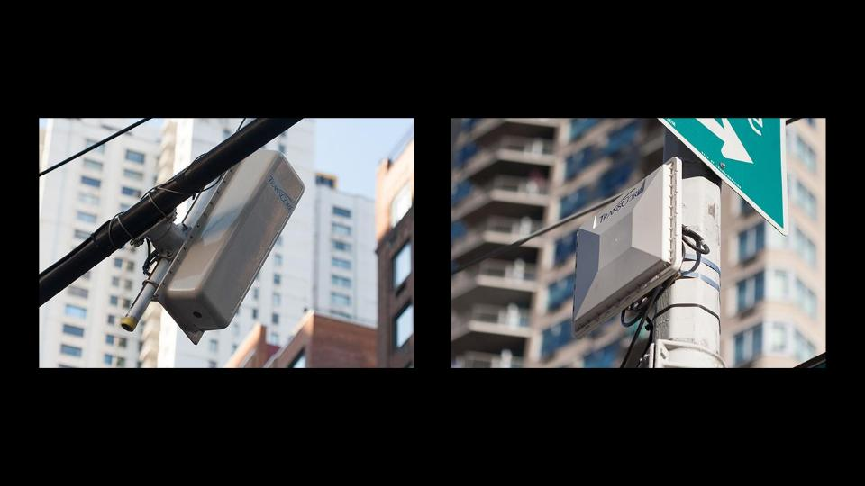
what does an internet that works for everyone look like?
thanks!